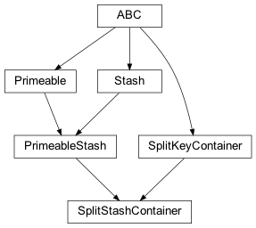
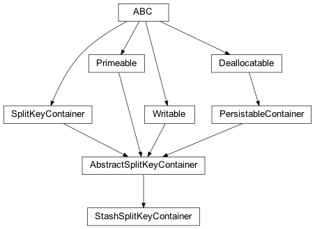
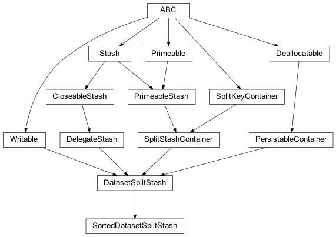

zensols.dataset package¶
Submodules¶
zensols.dataset.interface¶

Interfaces used for dealing with dataset splits.
-
class
zensols.dataset.interface.SplitKeyContainer[source]¶ Bases:
abc.ABCAn interface defining a container that partitions data sets (i.e.
trainvstest). For instances of this class, that data are the unique keys that point at the data.-
__init__()¶ Initialize self. See help(type(self)) for accurate signature.
-
property
counts_by_key¶ Return data set splits name to count for that respective split.
-
property
keys_by_split¶ Generate a dictionary of split name to keys for that split. It is expected this method will be very expensive.
-
-
class
zensols.dataset.interface.SplitStashContainer[source]¶ Bases:
zensols.persist.domain.PrimeableStash,zensols.dataset.interface.SplitKeyContainerAn interface like
SplitKeyContainer, but whose implementations are ofStashcontaining the instance data.For a default implemetnation, see
DatasetSplitStash.-
__init__()¶ Initialize self. See help(type(self)) for accurate signature.
-
property
split_name¶ Return the name of the split this stash contains. Thus, all data/items returned by this stash are in the data set given by this name (i.e.
train).- Return type
-
property
splits¶ Return a dictionary with keys as split names and values as the stashes represented by that split.
- See
- Return type
-
zensols.dataset.split¶

Implementations (some abstract) of split key containers.
-
class
zensols.dataset.split.AbstractSplitKeyContainer(key_path, pattern)[source]¶ Bases:
zensols.persist.annotation.PersistableContainer,zensols.dataset.interface.SplitKeyContainer,zensols.persist.domain.Primeable,zensols.config.writable.WritableA default implementation of a
SplitKeyContainer. This implementation keeps the order of the keys consistent as well, which is stored at the path given inkey_path. Once the keys are generated for the first time, they will persist on the file system.This abstract class requires an implementation of
_create_splits().-
abstract
_create_splits()[source]¶ Create the key splits using keys as the split name (i.e.
train) and the values as a list of the keys for the corresponding split.
-
__init__(key_path, pattern)¶ Initialize self. See help(type(self)) for accurate signature.
-
key_path: pathlib.Path¶ The directory to store the split keys.
-
pattern: str¶ The file name pattern to use for the keys file
key_pathon the file system, each file is named after the key split. For example, if{name}.datis used,train.datwill be a file with the ordered keys.
-
write(depth=0, writer=<_io.TextIOWrapper name='<stdout>' mode='w' encoding='utf-8'>)[source]¶ Write the contents of this instance to
writerusing indentiondepth.- Parameters
depth (
int) – the starting indentation depthwriter (
TextIOBase) – the writer to dump the content of this writable
-
abstract
-
class
zensols.dataset.split.StashSplitKeyContainer(key_path, pattern, stash, distribution=<factory>, shuffle=True)[source]¶ Bases:
zensols.dataset.split.AbstractSplitKeyContainerA default implementation of
AbstractSplitKeyContainerthat uses a delegate stash for source of the keys.-
__init__(key_path, pattern, stash, distribution=<factory>, shuffle=True)¶ Initialize self. See help(type(self)) for accurate signature.
-
distribution: Dict[str, float]¶ The distribution as a percent across all key splits. The distribution values must add to 1.
-
stash: zensols.persist.domain.Stash¶ The delegate stash from whence to get the keys to store.
-
zensols.dataset.stash¶

Utility stashes useful to common machine learning tasks.
-
class
zensols.dataset.stash.DatasetSplitStash(delegate, split_container)[source]¶ Bases:
zensols.persist.domain.DelegateStash,zensols.dataset.interface.SplitStashContainer,zensols.persist.annotation.PersistableContainer,zensols.config.writable.WritableA default implementation of
SplitStashContainer. However, it needs an instance of aSplitKeyContainer. This implementation generates a separate stash instance for each data set split (i.e.trainvstest). Each split instance holds the data (keys and values) for each split.Stash instances by split are obtained with
splits, and will have asplitattribute that give the name of the split.-
__init__(delegate, split_container)¶ Initialize self. See help(type(self)) for accurate signature.
-
split_container: zensols.dataset.interface.SplitKeyContainer¶ The instance that provides the splits in the dataset.
-
write(depth=0, writer=<_io.TextIOWrapper name='<stdout>' mode='w' encoding='utf-8'>)[source]¶ Write the contents of this instance to
writerusing indentiondepth.- Parameters
depth (
int) – the starting indentation depthwriter (
TextIOBase) – the writer to dump the content of this writable
-
-
class
zensols.dataset.stash.SortedDatasetSplitStash(delegate, split_container, sort_function=None)[source]¶ Bases:
zensols.dataset.stash.DatasetSplitStashA sorted version of a
DatasetSplitStash, where keys, values, items and iterations are sorted by key. This is important for reproducibility of results.Any shuffling of the dataset, for the sake of training on non-uniform data, needs to come before this step.
Implementation note: trying to reuse
zensols.persist.SortedStashwould over complicate, so this (minor) functionality overlap is redundant in this class.-
ATTR_EXP_META= ('sort_function',)¶
-
__init__(delegate, split_container, sort_function=None)¶ Initialize self. See help(type(self)) for accurate signature.
-
sort_function: Callable = None¶ A function, such as
int, used to sort keys per data set split.
-